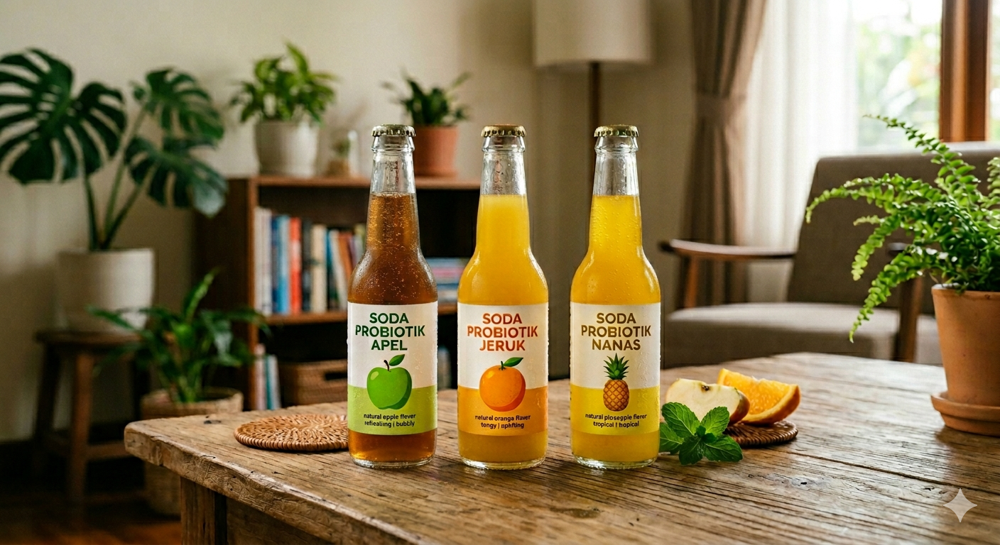
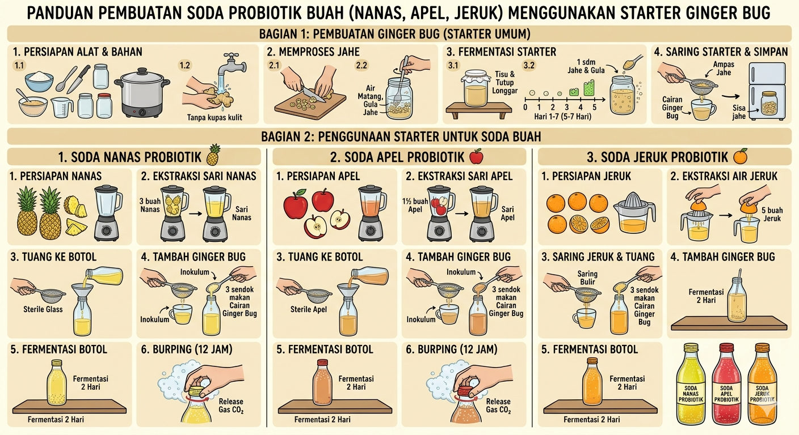

Minuman soda probiotik merupakan minuman berkarbonasi (proses melarutkan gas karbon dioksida ke dalam air) yang dihasilkan melalui proses fermentasi alami oleh bakteri asam laktat dan ragi, yang menghasilkan karbon dioksida serta membentuk keseimbangan rasa manis dan asam secara alami. Soda probiotik adalah minuman yang umumnya berbahan dasar buah organik dan ragi yang kemudian di fermentasi menjadi minuman berkarbonasi alami. Dalam penelitian ini, penulis menggunakan buah apel, jeruk, dan nanas serta memanfaatkan ginger bug sebagai starter dalam proses pembuatan minuman tersebut.
